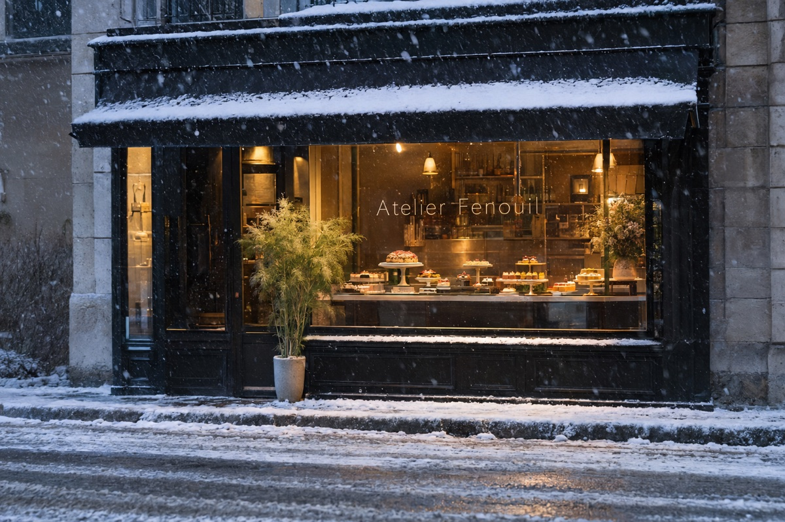

Atelier Fenouil

A small patisserie and tea-and-coffee counter with a glass kitchen at the back. Espresso, cortado and filter coffee will be served at the counter, with a handful of high stools along the window.

A small patisserie and tea-and-coffee counter with a glass kitchen at the back. Espresso, cortado and filter coffee will be served at the counter, with a handful of high stools along the window.